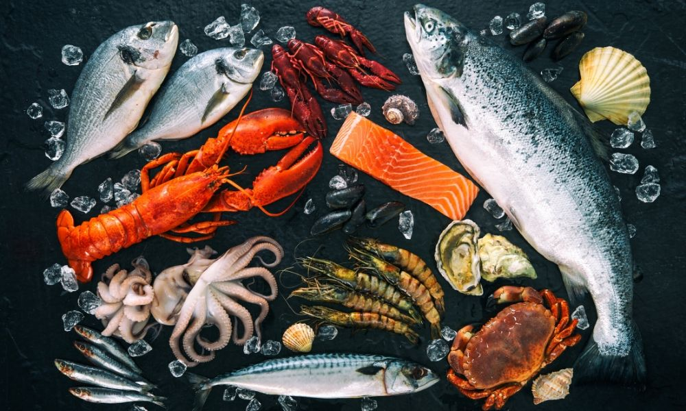

Meet Our Network: Sustainable Producers & Products üåæ

Green Leaf Organics
Specializing in leafy greens, herbs, and root vegetables. A fully organic-certified farm committed to soil health.
Certified Organic
Mangga King Farms ü•≠
Home to the sweetest Carabao Mangoes and other tropical fruits, grown with low-impact, traditional methods.
Tropical Fruits

Coastal Aqua Culture
Sustainable, freshwater and brackish water aquaculture for local Tilapia and Milkfish supply, promoting clean water use.
Seafood & Fish
The Honeycomb Apiary üçØ
Producers of raw, unprocessed honey and beeswax, actively contributing to local pollination and biodiversity.
Specialty GoodsNipa Palm Leaves
Specializing in the sustainable harvesting of nipa palm leaves for traditional roofing and crafts, supporting local artisans.
Local CraftsGolden Yolk Farms
Pasture-raised, heritage-breed brown eggs. Hens are fed a certified non-GMO, soy-free diet and are moved to fresh pasture daily.
Fresh Eggs